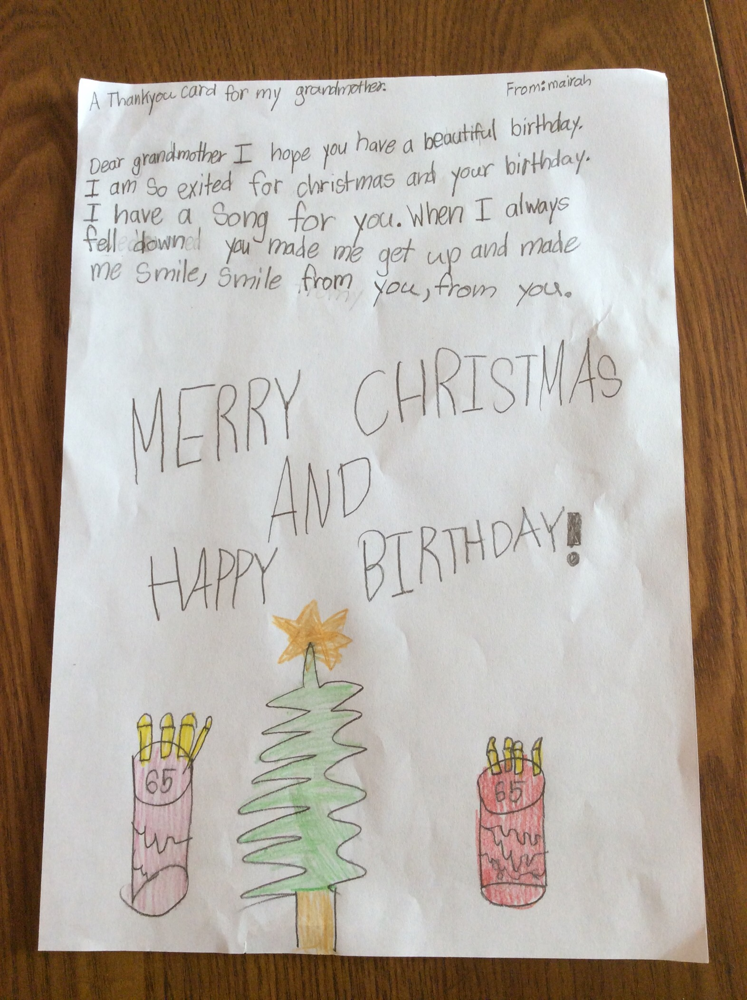

Thank you for everything that you have given us, we really appreciate it!
Here are the 10 things why you are the best dadi in the world!!!!
1. Dadi always like to pray for us
2. She always like to make us do our best
3. She really loves us
4. She is a hardworking women
5. She is really positive
6. She likes to make paranthas for Risshit and help me teach maths
7.
She loves astrology and our health
8. She is confident in who she is
9. She is loving and dedicated mother, grandmother, wife, and friend
10. We really miss you and hopefully we see you again
This is a small gift that mairah gave you.
Website made by: Risshit Sikka